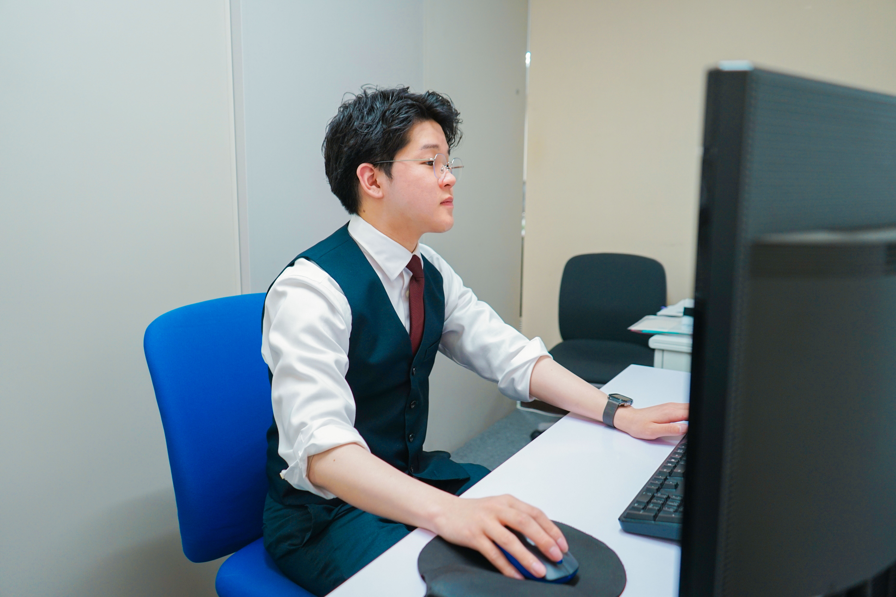
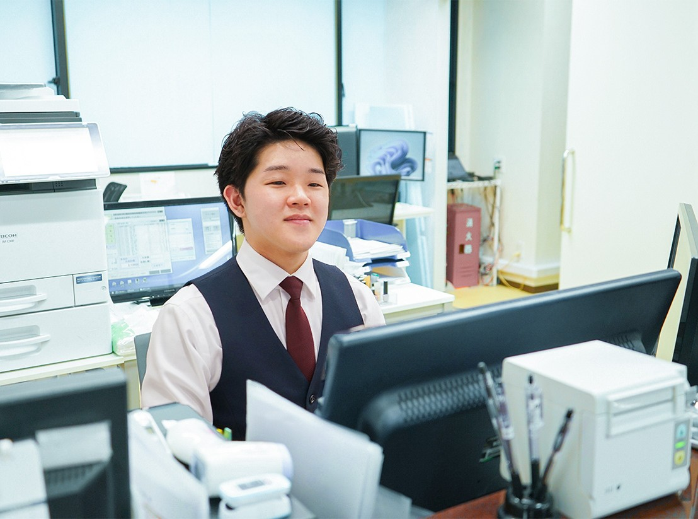
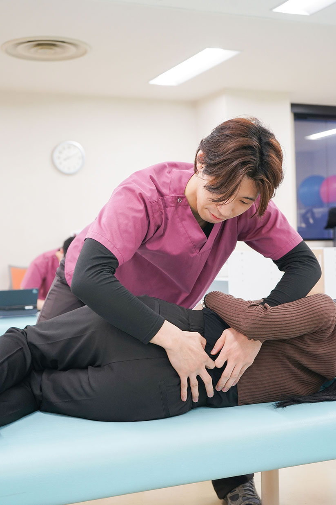
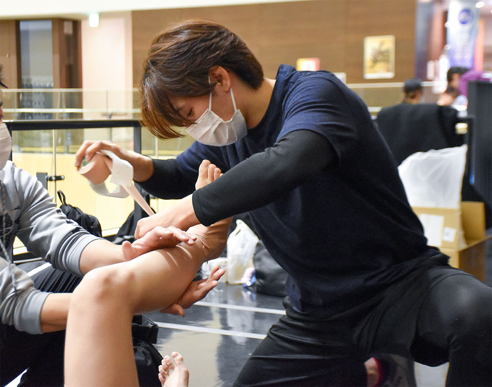
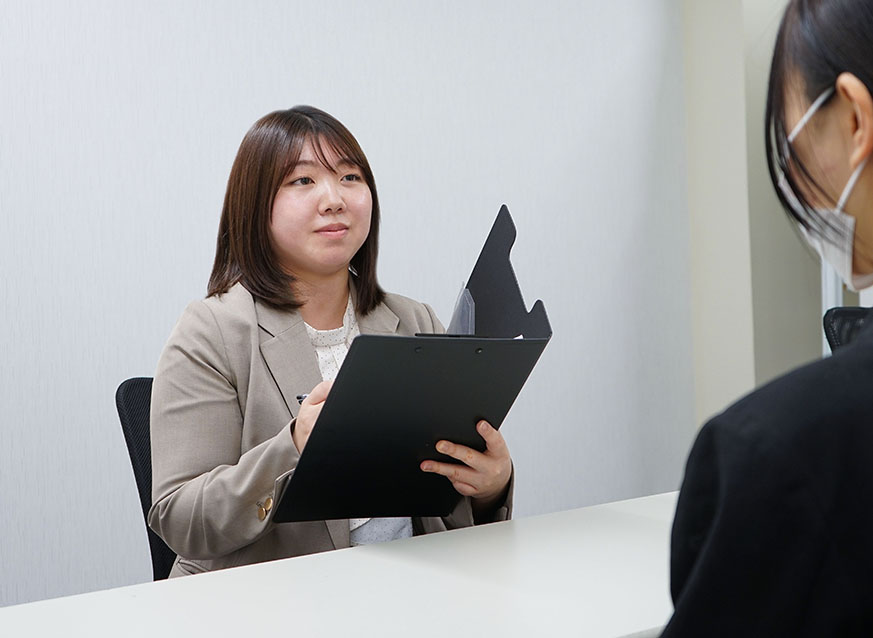

Staff Voiceスタッフの声
医療法人社団やまびこは、整形外科を中心に地域に根ざした医療を提供するクリニックグループです。
患者様一人ひとりに寄り添い、「医療を、もっと身近に。」という想いのもと、安心して通える医療環境づくりを大切にしています。
当グループでは、診療だけでなくリハビリテーション医療にも力を入れ、医師・看護師・リハビリスタッフ・医療事務など、さまざまな職種のスタッフが連携しながらチーム医療を実践しています
地域医療を支えるやりがいのある環境の中で、スタッフ一人ひとりが成長し、長く安心して働ける職場づくりを目指しています。
相沢 直輝 あいざわ なおき
柔道整復師の専門学校で学んだ経験から、CTやMRIなど設備が整った環境で専門的な知識や画像への理解を深めたいと考え、やまびこグループへ入職しました。
来院数が多く忙しい時間帯もありますが、部署を超えて連携しながら業務を進めており、相談しやすく支え合える職場だと感じています。

来院数が多く忙しい時間帯もありますが、部署内外で連携を取りながら協力して業務を進めています。
困ったときに相談しやすい雰囲気があり、チームで支え合っている職場だと感じています。
グループ院が多く、診療科目も幅広いため、さまざまな症例やケースに触れられる点が魅力です。
この規模感だからこそ経験できる業務の幅広さがあり、自身の成長につながっていると感じています。
患者様とお話する中で顔を覚えていただいたり、感謝の言葉をいただけたときは大きなやりがいを感じます。
また、判断に迷う案件を上司に相談し、解決に導けたときや患者様にご納得いただけたときには、チームで医療を支えている実感を持てます。
接遇面や事務処理能力の向上はもちろんですが、業務の背景や意義を考えながら取り組む姿勢が身についたことが大きな成長だと感じています。
物事を一つの側面だけでなく、多角的に捉える意識が高まりました。
有給休暇はオンライン申請が可能で、取得しやすい環境が整っています。プライベートの予定も調整しやすく、メリハリを持って働くことができています。
福利厚生アプリのポイント制度があり、商品やギフトカードと交換できます。日々の積み重ねではありますが、働くモチベーションの一つになっています。
分からない点は丁寧に教えていただける環境があり、経験を積むことで着実に成長できています。他業界からの転職者も活躍しており、安心して挑戦できる職場だと思います。
窓口での患者様対応、会計業務、レセプト作成などを担当しています。
日々の業務を着実に積み重ねながら、より専門性を高め、周囲から信頼される存在になれるよう成長していきたいと考えています。
忙しい日もありますが、部署内外で協力しながら仕事を進めていく環境なので安心して働ける職場だと思います。
わからないことも相談しやすく、経験を重ねることで少しずつできることが増えていきます。
また、新しい仕事にも挑戦しやすい環境で、資格取得の際にはお祝い金制度もあるため、成長を後押ししてくれる職場だと感じています。
医療業界に興味がある方は、ぜひ挑戦してみてください。一緒に働けたら嬉しいです。
1日の業務の流れ
出勤・準備
午前診療開始（受付・会計）
昼休憩
午後勤務開始
締め作業・退勤

馬場 勇次 ばば ゆうじ
専門学生4年生の時に当院で臨床実習をさせていただいたのがきっかけです。
私はプリセプターから、『知識』『技術』『人間性』で人を治す。だから学びが大切だと教わりました。良い言葉ですよね(笑)
その人から学びたい！と思い、やまびこグループへ入職しました。

患者様の数が多いので臨床経験を積むことができます。忙しさはありますが、充実してると捉えています。
外来のリハビリを経験することができます。整形外科疾患が多いです。
他院で手術をして当院でリハビリを行うケースもあり、THA、TKAなどの手術後のリハビリも経験することができます。
自分の行動が良い変化に結びつくと喜びを感じます。
なので、自分の行動で悪い変化が起きないように丁寧に人と関わることにしています。
徒手療法やピラティス、コーチングについて学び、知識や技術の幅を広げることができました。
残業したとしても19:00には帰れるので、友達と飲みに行ったり、zoomセミナー受けたり、漫画読んだりしてます📚
デロンギのコーヒーメーカーが休憩所にあるので毎朝飲ませて頂いてます☕️
未経験でも大丈夫です。自分の知識・技術・人間性について分析と努力は必要です。
基本業務は臨床に出ることです。その他にカルテ入力や計画書作成などの事務作業があります。
私は、ハンドボールチームのトレーナー帯同にも行っているので、試合や練習の時はそちらへ勤務させていただいています。
今はDGMSM-Japan(徒手療法の勉強)の認定試験があるので、それに向けて勉強しています。
その後、BASI Pilates Comprehensive Course(ピラティスの勉強)の受講を検討しています。
入社を考えている方へ向けて私から質問です。
あなたはどんな理学療法士になりたいですか？
あるいはどんなとき理学療法士として喜びを感じますか？
私は、『』になりたい！、
患者さんの『』が嬉しい！
などなど、人それぞれ答えがあると思います。
それが『在り方』です。
もし、私たち一同と近しい在り方であれば一緒に研鑽を積めれば嬉しく思いますのでよろしくお願いいたします。
1日の業務の流れ
清掃・準備
ミーティング
臨床開始
昼休憩
臨床開始
退勤

小笠原 未久 おがさわら みく
家族に医療関係の仕事に携わる人がいたことや、大学でスポーツ科学を専攻していたことから医療に興味を持ちました。
法人としての規模や基盤がしっかりしており、多くの経験を積めると感じたことから入職を決めました。
明るく前向きな雰囲気の中で、職種を問わず連携しながらチームで対応しています。
明るく前向きな雰囲気のクリニックです。職種を問わず連携しながら、チームで対応しています。
採用活動などで関わった方が現場で活躍している姿を見ると大きなやりがいを感じます。
保険診療の診療代無料
採用関連（面接・契約・応募者の対応など）、スタッフ対応、労務手続き、シフト作成 など
皆さんが安心して働き、長く活躍できるために、人事の立場から支えていくことが目標です。
忙しい日もありますが、部署内外で協力しながら仕事を進めていく環境なので安心して働ける職場だと思います。
わからないことも相談しやすく、経験を重ねることで少しずつできることが増えていきます。
また、新しい仕事にも挑戦しやすい環境で、資格取得の際にはお祝い金制度もあるため、成長を後押ししてくれる職場だと感じています。
医療業界に興味がある方は、ぜひ挑戦してみてください。一緒に働けたら嬉しいです。
1日の業務の流れ
出勤、メール・予定確認など
面接・契約対応、求人媒体の確認、履歴書の確認、応募者対応、面接日程の調整など
昼休憩
午後勤務開始、職員問い合わせ対応・労務手続きなど
退勤

長谷川 三彰 はせがわ みつあき
幅広い年齢層の患者様や多様な疾患に関わり、より多くの経験を積みたいと考え、やまびこグループへ入職しました。
実際に働いてみると、若いスタッフが多く明るく活気のある職場で、日々前向きに業務に取り組むことができています。
様々な症例に触れながら、自分自身の成長を実感できる環境だと感じています。
広い待合室やリハビリ室が整備されており、若いスタッフが多く、明るく活気のある職場です。
駅前に位置しているため通院しやすく、利便性の高い環境です。
また、整形外科だけでなく他の診療科を併設しているクリニックも多く、リハビリ以外の症状が生じた場合でも同一施設で受診できる点が魅力です。
痛みが強く日常生活に制限があった患者様が、回復されて日常生活や趣味を問題なく行えるようになり、「ありがとう」と感謝のお言葉をいただけたときに、大きなやりがいを感じます。
様々な疾患や幅広い年齢層の患者様が来院されるため、日々多くの経験を積むことができています。
有給休暇の取得率が高く、プライベートの時間も大切にしながら働くことができます。
体調不良時には、診察費の補助制度があり、安心して受診できる環境が整っています。
入職当初は、限られた介入時間の中で多くの患者様に対応することに難しさを感じていましたが、経験を重ねる中で徐々にスキルが身につき、対応にも慣れてきました。
リハビリ業務としては、予約患者様へのリハビリ介入や物理療法機器の着脱、計画書・カルテの作成などの書類業務を担当しています。
また、事務長業務として、月報・日報の入力、物品の管理・発注、業者対応なども行っています。
来院される患者様の満足度をさらに高めていくこと、またスタッフがより効率的に働ける環境づくりに貢献していくことです。
様々な疾患や幅広い年齢層の患者様に関わることができ、多くの経験を積める環境です。
経験豊富なスタッフからのサポートもあり、安心して成長していくことができますので、ぜひ一緒に働けることを楽しみにしています。
1日の業務の流れ
準備
臨床開始
昼休憩
書類業務・物理療法の取り外し
臨床開始
退勤
あなたも、地域医療を支える仲間に。
やまびこグループでは、地域医療を支える仲間を募集しています。
見学や説明会の参加も歓迎しておりますので、お気軽にエントリーください。